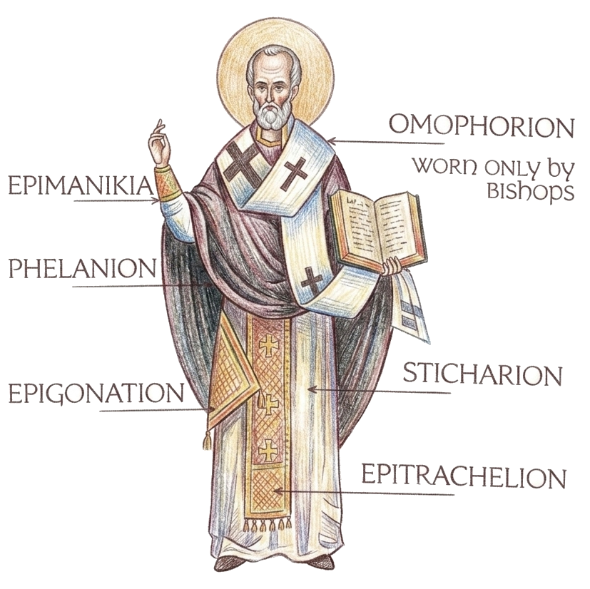

Originally
the Rite of Preparation, the Proskomidia, was an integral part of the
Eucharist celebration, but today, unless the bishop is celebrating, it is
performed alone by the clergy before the beginning of the public service of
the Divine Liturgy. In this rite, the priest and deacon prepare themselves
and the bread and wine for the Eucharist.
“First century Christians…usually brought to the Liturgy a gift
of bread and wine from their homes with the request to be remembered during
the service. The church official would pray over the gifts asking that God
would bless them and would accept the gifts as a sacrifice. The official
would also pray that the Lord would remember those who brought the gifts
and those for whom the gifts were brought. A deacon would read aloud their
names. From among these gifts, one or more loaves of bread and a portion of
wine would be selected which the official would prepare for use in the
Eucharist. The remaining gifts were used to sustain the clergy, the poor,
widows, and orphans. The gifts were also used for the fellowship meal (the
agape) which was held after the Liturgy.”1
Today the Preparation begins with the priest and deacon offering praise to
God and asking for mercy and forgiveness for themselves in front of the
iconostasis. They pray before the icon of Christ and the icon of the Mother
of God. Then they enter the sanctuary and bow before the Altar and kiss the
Gospels and the Altar.

Next, the priest and deacon ceremoniously put on their
vestments* while praying specific prayers
for each garment. In the early church the clergy wore no specific
vestments, but over the centuries their clothing, almost all of which were
adaptations of everyday apparel, came to have deeply symbolic meaning.
The priest wears a tunic (sticharion) representing purity of conscience
and life given by the Holy Spirit, a stole (epitrachelion) worn around the
neck representing putting on the yoke of Christ and willingness to suffer,
a belt (zone) representing readiness for spiritual combat, cuffs
(epimanikia) for the strength and power of God, and a cloak
(phelanion) for spiritual readiness. The epigonation
(palista or sword) is a square
cloth hanging at the right thigh representing the Sword of the Spirit, the
Word of God. The deacon wears a tunic similar to the priest except the
deacon’s sleeves are wide and a narrow stole (orarion – or
orar)
over his shoulder representing the deacon’s readiness to serve.2
The Rite of Preparation
Originally the Rite of Preparation, the Proskomidia, was an integral part of the Eucharist celebration, but today, unless the bishop is celebrating, it is performed alone by the clergy before the beginning of the public service of the Divine Liturgy. In this rite, the priest and deacon prepare themselves and the bread and wine for the Eucharist.
“First century Christians…usually brought to the Liturgy a gift of bread and wine from their homes with the request to be remembered during the service. The church official would pray over the gifts asking that God would bless them and would accept the gifts as a sacrifice. The official would also pray that the Lord would remember those who brought the gifts and those for whom the gifts were brought. A deacon would read aloud their names. From among these gifts, one or more loaves of bread and a portion of wine would be selected which the official would prepare for use in the Eucharist. The remaining gifts were used to sustain the clergy, the poor, widows, and orphans. The gifts were also used for the fellowship meal (the agape) which was held after the Liturgy.”1
Today the Preparation begins with the priest and deacon offering praise to God and asking for mercy and forgiveness for themselves in front of the iconostasis. They pray before the icon of Christ and the icon of the Mother of God. Then they enter the sanctuary and bow before the Altar and kiss the Gospels and the Altar.

Next, the priest and deacon ceremoniously put on their vestments* while praying specific prayers for each garment. In the early church the clergy wore no specific vestments, but over the centuries their clothing, almost all of which were adaptations of everyday apparel, came to have deeply symbolic meaning. The priest wears a tunic (sticharion) representing purity of conscience and life given by the Holy Spirit, a stole (epitrachelion) worn around the neck representing putting on the yoke of Christ and willingness to suffer, a belt (zone) representing readiness for spiritual combat, cuffs (epimanikia) for the strength and power of God, and a cloak (phelanion) for spiritual readiness. The epigonation (palista or sword) is a square cloth hanging at the right thigh representing the Sword of the Spirit, the Word of God. The deacon wears a tunic similar to the priest except the deacon’s sleeves are wide and a narrow stole (orarion – or orar) over his shoulder representing the deacon’s readiness to serve.2